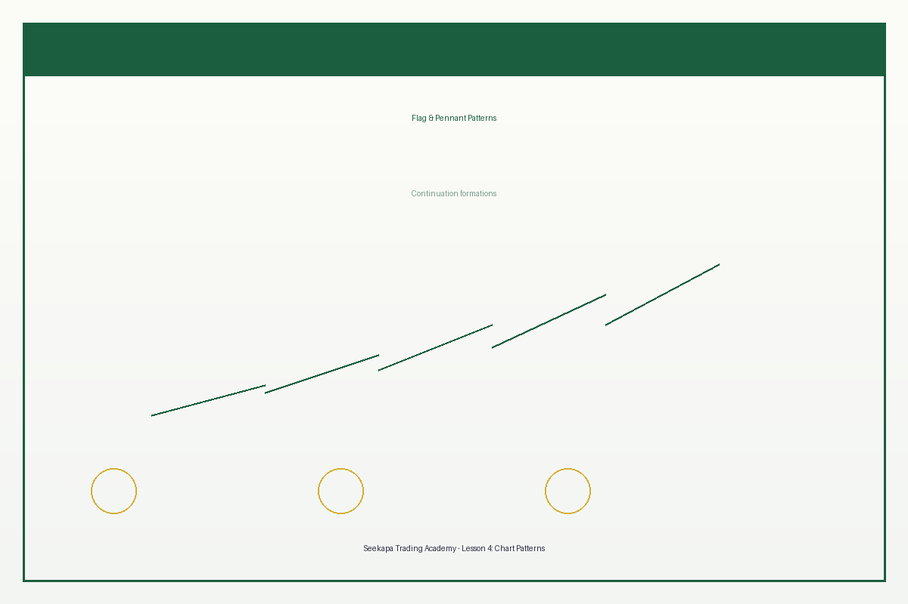

تحديد وتداول أنماط الرسوم البيانية الرئيسية للفرص المربحة
Lesson 4
Chart Patterns & Price Action
Identify and trade major chart patterns for profitable opportunities
Lección 4
Patrones de Gráficos y Acción del Precio
Identifica y opera patrones de gráficos principales para oportunidades rentables
Lição 4
Padrões de Gráficos e Ação do Preço
Identifique e negocie principais padrões de gráficos para oportunidades lucrativas
▶
فيديو الدرس قيد الإعداد
المدة: دقيقتان | الجودة: 1080p
أهداف التعلم
تعلم تحديد وتداول أنماط الرسوم البيانية الرئيسية
فهم إشارات التحليل السعري وعلم النفس السوقي
التعرف على سيناريوهات الاختراق والانهيار
تطوير استراتيجيات تداول قائمة على الأنماط
Learning Objectives
Learn to identify and trade major chart patterns
Understand price action signals and market psychology
Recognize breakout and breakdown scenarios
Develop pattern-based trading strategies
Objetivos de Aprendizaje
Aprender a identificar y operar patrones de gráficos principales
Comprender las señales de acción del precio y la psicología del mercado
Reconocer escenarios de ruptura y caída
Desarrollar estrategias de trading basadas en patrones
Objetivos de Aprendizagem
Aprender a identificar e negociar principais padrões de gráficos
Compreender sinais de ação do preço e psicologia do mercado
Reconhecer cenários de ruptura e colapso
Desenvolver estratégias de negociação baseadas em padrões
تمثل أنماط الرسوم البيانية التجسيد البصري لعلم نفس السوق، حيث يخلق الصراع بين المشترين والبائعين تشكيلات يمكن التنبؤ بها. يعتمد التداول بناءً على التحليل السعري على هذه الأنماط وتشكيلات الشموع للتعرف على الفرص عبر جميع الأسواق والأطر الزمنية. إن فهم هذه الأنماط يوفر للمتداولين ميزة تنافسية قوية في تحديد نقاط الدخول والخروج.
Chart patterns represent the visual manifestation of market psychology, showing how the battle between buyers and sellers creates predictable formations. Price action trading relies on these patterns and candlestick formations to identify opportunities across all markets and timeframes. Mastering these patterns provides traders with a significant competitive advantage in pinpointing entry and exit points.
Los patrones de gráficos representan la manifestación visual de la psicología del mercado, mostrando cómo la batalla entre compradores y vendedores crea formaciones predecibles. El trading de acción del precio se basa en estos patrones y formaciones de velas para identificar oportunidades en todos los mercados y marcos de tiempo.
Os padrões de gráficos representam a manifestação visual da psicologia do mercado, mostrando como a batalha entre compradores e vendedores cria formações previsíveis. A negociação de ação do preço depende desses padrões e formações de velas para identificar oportunidades em todos os mercados e prazos.
أنماط الاستمرار: التداول مع الاتجاه
تظهر أنماط الاستمرار خلال الأسواق في الاتجاهات وتقترح أن الاتجاه سيستأنف بعد التوطيد. تعرض أنماط الأعلام توطيد مستطيل ضد الاتجاه السائد، مما يشير إلى استراحة مؤقتة قبل استئناف الحركة. تعرض أنماط الرايات خطوط اتجاه متقاربة تشكل مثلثات صغيرة. تشير أنماط المثلثات (الصاعد، الهابط، المتماثل) إلى ضغط يتراكم قبل الاستمرار. توفر هذه الأنماط فرص ممتازة للعائد على المخاطر عند التداول في اتجاه الاتجاه المرسخ.

Continuation Patterns: Trading with the Trend
Continuation patterns appear during trending markets and suggest the trend will resume after consolidation. Flag patterns show rectangular consolidation against the prevailing trend, indicating a brief pause before momentum continues. Pennant patterns display converging trend lines forming small triangles. Triangle patterns (ascending, descending, symmetrical) indicate pressure building before continuation. These patterns offer excellent risk-reward setups when trading in the direction of the established trend.
Patrones de Continuación: Trading con la Tendencia
Los patrones de continuación aparecen durante mercados en tendencia e indican que la tendencia se reanudará después de la consolidación. Los patrones de bandera muestran consolidación rectangular contra la tendencia prevaleciente, indicando una pausa breve antes de continuar el impulso. Los patrones de banderín muestran líneas de tendencia convergentes formando pequeños triángulos.
Padrões de Continuação: Negociando com a Tendência
Os padrões de continuação aparecem durante mercados em tendência e sugerem que a tendência será retomada após consolidação. Os padrões de bandeira mostram consolidação retangular contra a tendência prevalecente, indicando uma pausa breve antes de continuar o impulso. Os padrões de banderola exibem linhas de tendência convergentes formando pequenos triângulos.
أنماط الانعكاس: تحديد تغييرات الاتجاه
تشير أنماط الانعكاس إلى التغييرات المحتملة في اتجاه الاتجاه. تعرض أنماط رأس الكتفين ثلاثة قمم مع الوسط الأعلى، مما يشير إلى ضعف ضغط الشراء. تتشكل الأسطح المزدوجة عندما تصل الأسعار إلى ارتفاع مرتين ثم تنخفض، مما يقترح أن المشترين لا يستطيعون الدفع بأعلى. تتطلب هذه الأنماط تأكيد حجم قوي وأطر زمنية أطول للتطور بشكل موثوق.
Reversal Patterns: Identifying Trend Changes
Reversal patterns signal potential changes in trend direction. Head and shoulders patterns show three peaks with the middle highest, indicating weakening buying pressure. Double tops form when prices reach a high twice then decline, suggesting buyers cannot push higher. These patterns require strong volume confirmation and longer timeframes to develop reliably.
Patrones de Reversión: Identificando Cambios de Tendencia
Los patrones de reversión señalan posibles cambios en la dirección de la tendencia. Los patrones de cabeza y hombros muestran tres picos con el del medio más alto, indicando debilitamiento de la presión de compra. Los techos dobles se forman cuando los precios alcanzan un máximo dos veces y luego caen, sugiriendo que los compradores no pueden subir más.
Padrões de Reversão: Identificando Mudanças de Tendência
Os padrões de reversão sinalizam possíveis mudanças na direção da tendência. Os padrões de cabeça e ombros mostram três picos com o do meio o mais alto, indicando enfraquecimento da pressão de compra. Os topos duplos se formam quando os preços atingem uma alta duas vezes e depois caem, sugerindo que os compradores não podem subir mais.
أنماط الشموع وإشارات السوق
توفر الشموع الفردية والتوليفات رؤى حول معنويات السوق. تشير شموع الدوجي إلى عدم الاستقرار والانعكاسات المحتملة بعد الاتجاهات القوية. تشير أنماط المطرقة والنجم الساقط إلى الانعكاسات في أطراف السوق. تحدث أنماط الالتف عندما تغطي شمعة واحدة السابقة بالكامل، مما يقترح تحولات الزخم. تعمل هذه الأنماط بشكل أفضل عند مستويات الدعم والمقاومة الرئيسية.
Candlestick Patterns and Signals
Individual candlesticks and combinations provide insights into market sentiment. Doji candles suggest indecision and potential reversals after strong trends. Hammer and shooting star patterns signal reversals at market extremes. Engulfing patterns occur when one candle completely engulfs the previous, suggesting momentum shifts. These patterns work best at key support and resistance levels.
Patrones de Velas y Señales
Las velas individuales y combinaciones proporcionan información sobre el sentimiento del mercado. Las velas doji sugieren indecisión y posibles reversiones después de tendencias fuertes. Los patrones de martillo y estrella fugaz señalan reversiones en extremos del mercado. Los patrones de engulfing ocurren cuando una vela envuelve completamente la anterior, sugiriendo cambios de impulso.
Padrões de Velas e Sinais
Velas individuais e combinações forneccem insights sobre o sentimento do mercado. As velas doji sugerem indecisão e possíveis reversões após tendências fortes. Os padrões de martelo e estrela cadente sinalizam reversões em extremos do mercado. Os padrões de envolvimento ocorrem quando uma vela envolve completamente a anterior, sugerindo mudanças de impulso.
استراتيجيات تداول التحليل السعري
يركز تداول التحليل السعري على قراءة تحركات الأسعار الخام بدون الاعتماد الثقيل على المؤشرات. يحدد تحليل هيكل السوق القمم والقيعان المتأرجحة لفهم الاتجاهات ونقاط الانعكاس. يركز تداول الشمعات الدبوسية على الشموع ذات الفتائل الطويلة التي تظهر رفض الأسعار. تقترح أنماط الأشرطة الداخلية التوطيد قبل تحركات الاختراق. توفر هذه الاستراتيجيات نقاط دخول وخروج واضحة مع مخاطر محددة جيداً.
Price Action Trading Strategies
Price action trading focuses on reading raw price movements without heavy indicator reliance. Market structure analysis identifies swing highs and lows to understand trends and reversal points. Pin bar trading focuses on candlesticks with long wicks showing price rejection. Inside bar patterns suggest consolidation before breakout moves. These strategies provide clear entry and exit points with well-defined risk.
Estrategias de Trading de Acción del Precio
El trading de acción del precio se enfoca en leer movimientos de precios sin depender de indicadores. El análisis de estructura de mercado identifica máximos y mínimos oscilantes para entender tendencias y puntos de reversión. El trading de pin bar se enfoca en velas con mechas largas que muestran rechazo de precio. Los patrones de barra interior sugieren consolidación antes de movimientos de ruptura.
Estratégias de Negociação de Ação do Preço
A negociação de ação do preço se concentra em ler movimentos de preço cru sem depender muito de indicadores. A análise de estrutura de mercado identifica máximos e mínimos oscilantes para entender tendências e pontos de reversão. A negociação de pin bar se concentra em velas com mechas longas mostrando rejeição de preço. Os padrões de barra interna sugerem consolidação antes de movimentos de ruptura.
اختبر معلوماتك
+50 XP
ما هو النمط الذي يشير إلى استمرار الاتجاه السائد؟
نمط رأس الكتفين
نمط الأعلام والرايات
الأسطح المزدوجة
نمط الكتفين المعكوسين
أي من الشموع التالية تشير إلى عدم استقرار السوق؟
شمعة المطرقة
شمعة الدوجي
شمعة الجسم الطويل
شمعة الالتف
Knowledge Check
+50 XP
Which pattern suggests the continuation of an established trend?
Head and shoulders pattern
Flag and pennant patterns
Double tops pattern
Inverse head and shoulders
Which candlestick indicates market indecision?
Hammer candle
Doji candle
Long body candle
Engulfing pattern
Verificación de Conocimiento
+50 XP
¿Qué patrón sugiere la continuación de una tendencia establecida?
Patrón cabeza y hombros
Patrones de bandera y banderín
Patrón de techos dobles
Cabeza y hombros inversa
¿Qué vela indica indecisión del mercado?
Vela martillo
Vela doji
Vela de cuerpo largo
Patrón engulfing
Verificação de Conhecimento
+50 XP
Qual padrão sugere a continuação de uma tendência estabelecida?
Padrão cabeça e ombros
Padrões de bandeira e banderola
Padrão de topos duplos
Cabeça e ombros inversa
Qual vela indica indecisão do mercado?
Vela martelo
Vela doji
Vela de corpo longo
Padrão de envolvimento
النقاط الرئيسية
تساعد أنماط الاستمرار المتداولين على الدخول إلى المراكز في الاتجاهات المرسخة
تشير أنماط الانعكاس إلى تغييرات الاتجاه المحتملة مع التأكيد
توفر أنماط الشموع رؤى حول تغييرات معنويات السوق
يركز تداول التحليل السعري على تحركات الأسعار الخام وهيكل السوق
تحسين تأكيد النمط من خلال الحجم والسياق معدلات النجاح
Key Takeaways
Continuation patterns help traders enter positions in established trends
Reversal patterns signal potential trend changes with confirmation
Candlestick patterns provide insights into market sentiment changes
Price action trading focuses on raw price movements and market structure
Pattern confirmation through volume and context improves success rates
Puntos Clave
Los patrones de continuación ayudan a los traders a entrar en posiciones en tendencias establecidas
Los patrones de reversión señalan cambios de tendencia potenciales con confirmación
Los patrones de velas proporcionan información sobre cambios de sentimiento del mercado
El trading de acción del precio se enfoca en movimientos de precios crudos y estructura del mercado
La confirmación de patrones a través del volumen y contexto mejora las tasas de éxito
Pontos-Chave
Os padrões de continuação ajudam os traders a entrar em posições em tendências estabelecidas
Os padrões de reversão sinalizam mudanças de tendência potenciais com confirmação
Os padrões de velas fornecem insights sobre mudanças no sentimento do mercado
A negociação de ação do preço se concentra em movimentos de preço cru e estrutura do mercado
A confirmação de padrão através de volume e contexto melhora as taxas de sucesso
التمرين التفاعلي
+100 XP
حدد ثلاثة أنماط رسم بياني مختلفة (نمط استمرار واحد، نمط انعكاس واحد، نمط شموع واحد) في سوقك المختار على مدار الأسبوع القادم. وثق كل نمط بلقطات شاشة، لاحظ الحجم أثناء التكوين والاختراق، وتتبع حركة السعر اللاحقة للتحقق من فعالية النمط.
توثيق النمط الخاص بك
Interactive Exercise
+100 XP
Identify three different chart patterns (one continuation, one reversal, one candlestick pattern) on your chosen market over the next week. Document each pattern with screenshots, note the volume during formation and breakout, and track subsequent price movement to validate pattern effectiveness.
Ejercicio Práctico
+100 XP
Identifica tres patrones de gráficos diferentes en tu mercado elegido durante la próxima semana. Documenta cada patrón con capturas de pantalla, nota el volumen durante la formación y ruptura, y rastrea el movimiento de precio posterior.
Exercício Prático
+100 XP
Identifique três padrões de gráficos diferentes em seu mercado escolhido durante a próxima semana. Documente cada padrão com capturas de tela, observe o volume durante a formação e ruptura, e rastreie o movimento de preço subsequente.